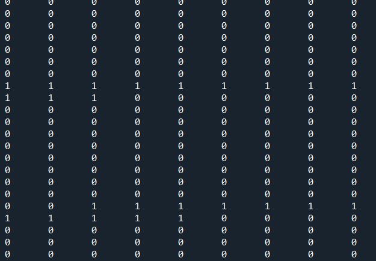
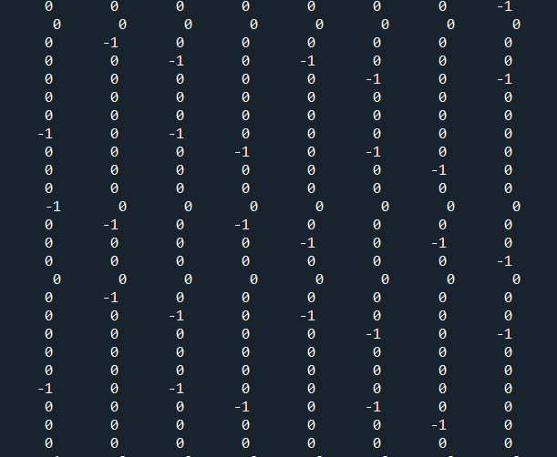
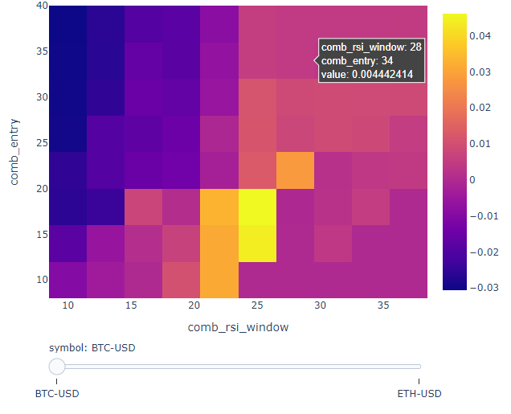
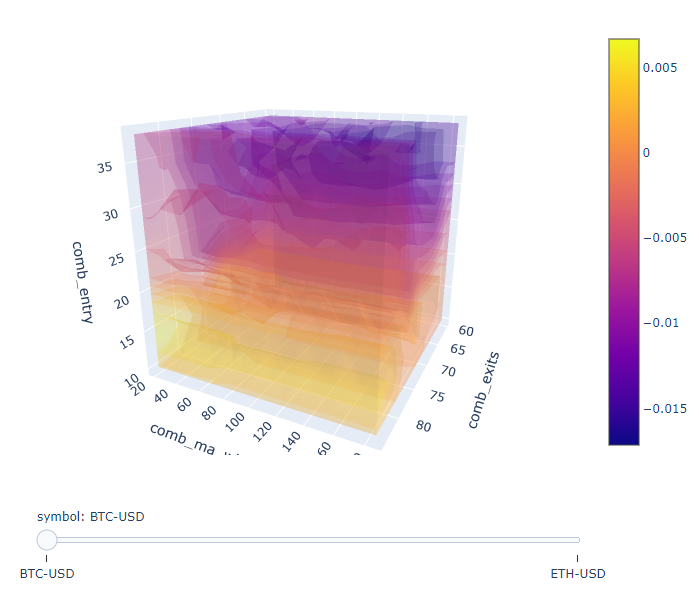

simple_from_signals
from binance.client import Client
from dateutil import relativedelta
import vectorbt as vbt
import datetime as dt
import pandas as pd
import os
import json
import warnings
warnings.simplefilter("ignore", UserWarning)
class binanceAPI:
def __init__(self, configPath):
with open(configPath, "r") as f:
self.kw_login = json.loads(f.read())
self.api = self.__login(self.kw_login["PUBLIC"], self.kw_login["SECRET"])
self.__conncet_redis()
def __conncet_redis(self):
redis_info = {
"host": "127.0.0.1",
"port": 6379,
"max_connections": 2,
"db": 1,
}
pool = redis.ConnectionPool(**redis_info)
try:
self.rs = redis.Redis(connection_pool=pool)
except Exception as err:
logger.error(err)
raise err
def __login(self, PUBLIC, SECRET):
return Client(api_key=PUBLIC, api_secret=SECRET)
def build_df(klines):
cols = [
"timestamp",
"open",
"high",
"low",
"close",
"volume",
"close_time",
"quote_av",
"trades",
"tb_base_av",
"tb_quote_av",
"ignore",
]
df = pd.DataFrame(klines, columns=cols)
df["timestamp"] = [dt.datetime.fromtimestamp(x / 1000.0) for x in df["timestamp"]]
df.set_index("timestamp", inplace=True)
df = df[["open", "high", "low", "close", "volume"]]
df[["open", "high", "low", "close", "volume"]] = df[
["open", "high", "low", "close", "volume"]
].astype(float)
df["idx"] = range(0, len(df))
return df
def backtesting(df):
price = df["close"]
fast_ma = vbt.MA.run(price, 5)
slow_ma = vbt.MA.run(price, 50)
entries = fast_ma.ma_crossed_above(slow_ma)
exits = fast_ma.ma_crossed_below(slow_ma)
show_report(df, entries, exits)
def show_report(df, long_entries, long_exits):
pf = vbt.Portfolio.from_signals(
df["close"],
long_entries,
long_exits,
init_cash=100000,
fees=0.000,
)
stats_info = pf.stats()
start = stats_info["Start"]
end = stats_info["End"]
winrate = stats_info[r"Win Rate [%]"]
total_return = stats_info[r"Total Return [%]"]
total_profit = pf.total_profit()
max_drawdown = pf.max_drawdown()
total_trades = len(pf.trades)
print(pf.stats())
print(
f"coin:{coin} {start} ~ {end}, winrate:{round(winrate, 2)}%, total_return:{round(total_return, 2)}, max_drawdown:{round(max_drawdown, 2)}, total_trades:{total_trades}"
)
if __name__ == "__main__":
coin = "BTCUSDT"
configPath = os.environ["HOME"] + "/.mybin/jason/binance_login.txt"
KLINE_INTERVAL = Client.KLINE_INTERVAL_1MINUTE
with open(configPath, "r") as f:
kw_login = json.loads(f.read())
start_time = dt.datetime.now()
client = Client(api_key=kw_login["PUBLIC"], api_secret=kw_login["SECRET"])
klines = client.get_historical_klines(
symbol=coin,
interval=KLINE_INTERVAL,
start_str=(start_time - relativedelta.relativedelta(months=1)).strftime(
"%Y-%m-%d %H:%M:%S"
),
end_str=start_time.strftime("%Y-%m-%d %H:%M:%S"),
)
df = build_df(klines)
backtesting(df)
test_func_nb_order
from numba import njit
from binance.client import Client
from dateutil import relativedelta
from vectorbt.portfolio.enums import (
Direction,
NoOrder,
OrderStatus,
OrderSide,
)
from vectorbt.portfolio import nb
import datetime as dt
import json
import os
import numpy as np
import pandas as pd
import vectorbt as vbt
import warnings
warnings.filterwarnings("ignore")
@njit
def pre_sim_func_nb(c):
# We need to define stop price per column once
stop_price = np.full(c.target_shape[1], np.nan, dtype=np.float_)
return (stop_price,)
@njit
def order_func_nb(c, stop_price, entries, exits, size):
# Select info related to this order
entry_now = nb.get_elem_nb(c, entries)
exit_now = nb.get_elem_nb(c, exits)
size_now = nb.get_elem_nb(c, size)
price_now = nb.get_elem_nb(c, c.close)
stop_price_now = stop_price[c.col]
# Our logic
if entry_now:
if c.position_now == 0:
return nb.order_nb(
size=size_now, price=price_now, direction=Direction.LongOnly
)
elif exit_now or price_now >= stop_price_now:
if c.position_now > 0:
return nb.order_nb(
size=-size_now, price=price_now, direction=Direction.LongOnly
)
return NoOrder
@njit
def post_order_func_nb(c, stop_price, stop):
# Same broadcasting as for size
stop_now = nb.get_elem_nb(c, stop)
if c.order_result.status == OrderStatus.Filled:
if c.order_result.side == OrderSide.Buy:
# Position entered: Set stop condition
stop_price[c.col] = (1 + stop_now) * c.order_result.price
else:
# Position exited: Remove stop condition
stop_price[c.col] = np.nan
def simulate(close, entries, exits, size, threshold):
return vbt.Portfolio.from_order_func(
close,
order_func_nb,
vbt.Rep("entries"),
vbt.Rep("exits"),
vbt.Rep("size"), # order_args
pre_sim_func_nb=pre_sim_func_nb,
post_order_func_nb=post_order_func_nb,
post_order_args=(vbt.Rep("threshold"),),
broadcast_named_args=dict( # broadcast against each other
entries=entries, exits=exits, size=size, threshold=threshold
),
)
def build_df(klines):
cols = [
"timestamp",
"open",
"high",
"low",
"close",
"volume",
"close_time",
"quote_av",
"trades",
"tb_base_av",
"tb_quote_av",
"ignore",
]
df = pd.DataFrame(klines, columns=cols)
df["timestamp"] = [dt.datetime.fromtimestamp(x / 1000.0) for x in df["timestamp"]]
df.set_index("timestamp", inplace=True)
df = df[["open", "high", "low", "close", "volume"]]
df[["open", "high", "low", "close", "volume"]] = df[
["open", "high", "low", "close", "volume"]
].astype(float)
return df
def test():
close = pd.Series([10, 11, 12, 13, 14])
entries = pd.Series([True, True, False, False, False])
exits = pd.Series([False, False, False, True, True])
pf = simulate(close, entries, exits, np.inf, 0.1) # .asset_flow()
print(pf.asset_flow())
print(pf.stats())
if __name__ == "__main__":
# test()
coin = "BTCUSDT"
configPath = os.environ["HOME"] + "/.mybin/jason/binance_login.txt"
KLINE_INTERVAL = Client.KLINE_INTERVAL_1MINUTE
with open(configPath, "r") as f:
kw_login = json.loads(f.read())
start_time = dt.datetime.now()
client = Client(api_key=kw_login["PUBLIC"], api_secret=kw_login["SECRET"])
klines = client.get_historical_klines(
symbol=coin,
interval=KLINE_INTERVAL,
start_str=(start_time - relativedelta.relativedelta(months=1)).strftime(
"%Y-%m-%d %H:%M:%S"
),
end_str=start_time.strftime("%Y-%m-%d %H:%M:%S"),
)
df = build_df(klines)
price = df["close"]
fast_ma = vbt.MA.run(price, 5)
slow_ma = vbt.MA.run(price, 50)
entries = fast_ma.ma_crossed_above(slow_ma)
exits = fast_ma.ma_crossed_below(slow_ma)
pf = simulate(price, entries, exits, np.inf, 0.1) # .asset_flow()
print(pf.stats())
from_orders
import pandas as pd
import vectorbt as vbt
import numpy as np
from datetime import datetime, timedelta
# Entry trades
pf_kwargs = dict(
close=pd.Series([1., 2., 3., 4., 5.]),
size=pd.Series([1., -2., 2., -2., 1.]),
fixed_fees=1.
)
entry_trades = vbt.Portfolio.from_orders(**pf_kwargs).entry_trades
print(entry_trades.records_readable)
exit_trades = vbt.Portfolio.from_orders(**pf_kwargs).exit_trades
print(exit_trades.records_readable)
# Entry positions
positions = vbt.Portfolio.from_orders(**pf_kwargs).positions
print(positions.records_readable)
print(entry_trades.pnl.sum() == exit_trades.pnl.sum() == positions.pnl.sum())
price = pd.Series([1., 2., 3., 4., 3., 2., 1.])
size = pd.Series([1., -0.5, -0.5, 2., -0.5, -0.5, -0.5])
trades = vbt.Portfolio.from_orders(price, size).trades
print(trades.count())
print(trades.pnl.sum())
print(trades.winning.count())
print(trades.winning.pnl.sum())
print(trades.stats())
np.random.seed(42)
price = pd.DataFrame({
'a': np.random.uniform(1, 2, size=100),
'b': np.random.uniform(1, 2, size=100)
}, index=[datetime(2020, 1, 1) + timedelta(days=i) for i in range(100)])
size = pd.DataFrame({
'a': np.random.uniform(-1, 1, size=100),
'b': np.random.uniform(-1, 1, size=100),
}, index=[datetime(2020, 1, 1) + timedelta(days=i) for i in range(100)])
pf = vbt.Portfolio.from_orders(price, size, fees=0.01, freq='d')
print(pf.trades['a'].stats(settings=dict(incl_open=True)))
多幣種回測
import numpy as np
import pandas as pd
import vectorbt as vbt
import warnings
from datetime import datetime
# Prepare data
start = "2019-01-01 UTC" # crypto is in UTC
end = "2020-01-01 UTC"
btc_price = vbt.YFData.download("BTC-USD", start=start, end=end).get("Close")
eth_price = vbt.YFData.download("ETH-USD", start=start, end=end).get("Close")
comb_price = btc_price.vbt.concat(
eth_price, keys=pd.Index(["BTC", "ETH"], name="symbol")
)
comb_price.vbt.drop_levels(-1, inplace=True)
fast_ma = vbt.MA.run(comb_price, [10, 20], short_name="fast")
slow_ma = vbt.MA.run(comb_price, [30, 30], short_name="slow")
entries = fast_ma.ma_crossed_above(slow_ma)
exits = fast_ma.ma_crossed_below(slow_ma)
pf = vbt.Portfolio.from_signals(comb_price, entries, exits)
print(pf.total_return())
print(pf.stats())
Multiple assets, multiple trade signals per asset
import pandas as pd
import vectorbt as vbt
price = pd.DataFrame({"p1": [1, 2, 3, 4], "p2": [5, 6, 7, 8]})
price.columns.name = "asset"
entries = pd.DataFrame(
{
"en1": [True, False, False, False],
"en2": [False, True, False, False],
"en3": [False, False, True, False],
"en4": [False, False, False, True],
}
)
entries.columns.name = "entries"
exits = pd.DataFrame(
{
"ex1": [False, False, False, True],
"ex2": [False, False, False, True],
"ex3": [False, False, False, True],
"ex4": [False, False, False, True],
}
)
exits.columns.name = "exits"
entries = entries.vbt.stack_index(pd.Index(["p1", "p1", "p2", "p2"], name="asset"))
exits = exits.vbt.stack_index(pd.Index(["p1", "p1", "p2", "p2"], name="asset"))
portfolio = vbt.Portfolio.from_signals(price, entries, exits) # not grouped portfolio
print(portfolio.total_return())
print(portfolio.total_return(group_by='asset')) # group not grouped portfolio
portfolio = vbt.Portfolio.from_signals(price, entries, exits, group_by='asset') # grouped portfolio
print(portfolio.total_return())
print(portfolio.total_return(group_by=False)) # ungroup grouped portfolio
from_order_func 做資金加減碼
from numba import njit
from vectorbt.portfolio import nb
from vectorbt.portfolio.enums import Direction
import numpy as np
import vectorbt as vbt
import pandas as pd
import warnings
pd.options.display.float_format = lambda x: "%.2f" % x
warnings.simplefilter("ignore", UserWarning)
def simulate():
@njit
def order_func_nb(c, action, direction, fees):
# _size = 1000 / float(c.close[c.i, c.col])
# print(
# "Close:",
# c.close[c.i, c.col],
# "Direction:",
# direction,
# "c.i:",
# c.i,
# "c.col:",
# c.col,
# "fees:",
# fees,
# "_size:",
# round(_size, 2),
# "position_now:",
# c.position_now,
# "action:",
# action[c.i],
# )
size = 0
if action[c.i] == 1:
# 1000 / float(c.close[c.i, c.col]) 買入 1000 元的股票
size = 1000 / float(c.close[c.i, c.col])
elif action[c.i] == -1:
# -c.position_now 持有全部的股票賣出
size = -c.position_now
return nb.order_nb(
price=c.close[c.i, c.col], size=size, direction=direction, fees=fees,
)
# 加碼策略
action = pd.Series([1, 1, -1, 1, -1, 0, 0, 1, -1])
dates = pd.date_range("20220301", periods=len(action))
price = pd.DataFrame(
{"Price": [100, 200, 300, 400, 500, 600, 700, 800, 900]}, index=dates
)
fees = 0.002 # per frame
pf = vbt.Portfolio.from_order_func(
price,
order_func_nb,
np.asarray(action),
Direction.LongOnly,
fees,
init_cash=1000000,
)
orders_records_readable = pf.orders.records_readable.drop("Column", axis=1)
print(orders_records_readable.to_markdown(index=False, floatfmt=".2f"))
print(pf.assets().rename(columns={"Price": "assets"}))
print(pf.cash().rename(columns={"Price": "cash"}))
print(pf.stats())
if __name__ == "__main__":
simulate()
OrderContext
class OrderContext(tp.NamedTuple):
target_shape: tp.Shape # 目標形狀
group_lens: tp.Array1d # 分組長度
init_cash: tp.Array1d # 初始現金
cash_sharing: bool # 是否共享現金
call_seq: tp.Optional[tp.Array2d] # 呼叫順序
segment_mask: tp.ArrayLike # 分段遮罩
call_pre_segment: bool # 是否在分段之前呼叫
call_post_segment: bool # 是否在分段之後呼叫
close: tp.ArrayLike # 收盤價
ffill_val_price: bool # 是否向前填充估值價格
update_value: bool # 是否更新持倉估值
fill_pos_record: bool # 是否填充持倉紀錄
flex_2d: bool # 是否彈性處理2D數據
order_records: tp.RecordArray # 訂單紀錄
log_records: tp.RecordArray # 日誌紀錄
last_cash: tp.Array1d # 上次現金
last_position: tp.Array1d # 上次持倉
last_debt: tp.Array1d # 上次負債
last_free_cash: tp.Array1d # 上次自由現金
last_val_price: tp.Array1d # 上次估值價格
last_value: tp.Array1d # 上次持倉估值
second_last_value: tp.Array1d # 倒數第二次持倉估值
last_return: tp.Array1d # 上次收益率
last_oidx: tp.Array1d # 上次訂單索引
last_lidx: tp.Array1d # 上次日誌索引
last_pos_record: tp.RecordArray # 上次持倉紀錄
group: int # 分組
group_len: int # 分組長度
from_col: int # 起始欄位
to_col: int # 終止欄位
i: int # 迭代器
call_seq_now: tp.Optional[tp.Array1d] # 當前呼叫順序
col: int # 當前欄位
call_idx: int # 當前呼叫索引
cash_now: float # 現金餘額
position_now: float # 持倉量
debt_now: float # 負債金額
free_cash_now: float # 自由現金餘額
val_price_now: float # 估值價格
value_now: float # 持倉估值
return_now: float # 當前收益率
報告列出了許多評估指標：
Start：回測開始日期。
End：回測結束日期。
Period：回測時間段。
Start Value：回測開始時的資產價值。
End Value：回測結束時的資產價值。
Total Return [%]：回測期間的總回報率。
Benchmark Return [%]：基準指數的回報率。
Max Gross Exposure [%]：最大總槓桿率。
Total Fees Paid：交易費用總額。
Max Drawdown [%]：最大回撤率。
Max Drawdown Duration：最大回撤期間。
Total Trades：總交易次數。
Total Closed Trades：總平倉交易次數。
Total Open Trades：總持倉交易次數。
Open Trade PnL：未平倉交易的盈虧。
Win Rate [%]：勝率。
Best Trade [%]：最佳交易回報率。
Worst Trade [%]：最差交易回報率。
Avg Winning Trade [%]：平均勝利交易回報率。
Avg Losing Trade [%]：平均虧損交易回報率。
Avg Winning Trade Duration：平均勝利交易持續時間。
Avg Losing Trade Duration：平均虧損交易持續時間。
Profit Factor：盈虧比。
Expectancy：預期值。
Sharpe Ratio：夏普比率。
Calmar Ratio：卡爾馬比率。
Omega Ratio：歐米茄比率。
Sortino Ratio：索提諾比率。
其中一些指標的定義可能需要參考具體的金融概念，例如回報率、總槓桿率、回撤率、夏普比率等等。這些指標可以幫助用戶評估交易策略的表現，以便做出相應的調整和優化。
asset_flow
import numpy as np
from vectorbt.records.nb import col_map_nb
from vectorbt.portfolio.nb import simulate_from_orders_nb, asset_flow_nb
from vectorbt.portfolio.enums import Direction
close = np.array([1, 2, 3, 4, 5])[:, None]
order_records, _ = simulate_from_orders_nb(
target_shape=close.shape,
close=close,
group_lens=np.array([1]),
init_cash=np.array([100]),
call_seq=np.full(close.shape, 0)
)
print(order_records)
col_map = col_map_nb(order_records['col'], close.shape[1])
asset_flow = asset_flow_nb(close.shape, order_records, col_map, Direction.Both)
print(asset_flow)
資金1000 加碼 size 統計
import pandas as pd
# create a date range
dates = pd.date_range("20220301", periods=7)
# create a price dataframe
price = pd.DataFrame({"price": [50, 100, 200, 250, 300, 400, 500]}, index=dates)
# create entry and exit dataframes
entries = pd.DataFrame(
{"entry": [False, True, True, False, False, True, False]}, index=dates
)
exits = pd.DataFrame(
{"exit": [False, False, False, False, True, False, True]}, index=dates
)
# concatenate the dataframes horizontally
df = pd.concat([price, entries, exits], axis=1)
# calculate the size column based on entries and exits
size = []
current_size = 0
for i in range(len(df)):
if df["entry"][i]:
current_size = 1000 / df["price"][i]
elif df["exit"][i]:
current_size = -sum(size)
elif not df["entry"][i] and not df["exit"][i]:
current_size = 0
size.append(current_size)
# add the size column to the dataframe
df["size"] = size
# print the resulting dataframe
print(df)
from numba import njit
from vectorbt.portfolio import nb
from vectorbt.portfolio.enums import (
SizeType,
Direction,
NoOrder,
OrderStatus,
OrderSide,
)
import numpy as np
import vectorbt as vbt
import pandas as pd
import warnings
warnings.simplefilter("ignore", UserWarning)
@njit
def pre_sim_func_nb(c):
# We need to define stop price per column once
stop_price = np.full(c.target_shape[1], np.nan, dtype=np.float_)
return (stop_price,)
@njit
def order_func_nb(c, stop_price, entries, exits, size):
# Select info related to this order
entry_now = nb.get_elem_nb(c, entries)
exit_now = nb.get_elem_nb(c, exits)
size_now = nb.get_elem_nb(c, size)
price_now = nb.get_elem_nb(c, c.close)
stop_price_now = stop_price[c.col]
# Our logic
if entry_now:
if c.position_now == 0:
return nb.order_nb(
size=size_now, price=price_now, direction=Direction.LongOnly
)
elif exit_now or price_now >= stop_price_now:
if c.position_now > 0:
return nb.order_nb(
size=-size_now, price=price_now, direction=Direction.LongOnly
)
return NoOrder
@njit
def post_order_func_nb(c, stop_price, stop):
# Same broadcasting as for size
stop_now = nb.get_elem_nb(c, stop)
if c.order_result.status == OrderStatus.Filled:
if c.order_result.side == OrderSide.Buy:
# Position entered: Set stop condition
stop_price[c.col] = (1 + stop_now) * c.order_result.price
else:
# Position exited: Remove stop condition
stop_price[c.col] = np.nan
def simulate(close, entries, exits, size, threshold):
return vbt.Portfolio.from_order_func(
close,
order_func_nb,
vbt.Rep("entries"),
vbt.Rep("exits"),
vbt.Rep("size"), # order_args
pre_sim_func_nb=pre_sim_func_nb,
post_order_func_nb=post_order_func_nb,
post_order_args=(vbt.Rep("threshold"),),
broadcast_named_args=dict( # broadcast against each other
entries=entries, exits=exits, size=size, threshold=threshold
),
)
if __name__ == "__main__":
close = pd.Series([10, 11, 12, 13, 14])
entries = pd.Series([True, True, False, False, False])
exits = pd.Series([False, False, False, True, True])
pf = simulate(close, entries, exits, np.inf, 0.1)
print(pf.orders.records_readable)
print(pf.assets())
print(pf.cash())
print(pf.stats())
使用 from_order_func 動態加碼
from numba import njit
from vectorbt.utils.enum_ import map_enum_fields
from vectorbt.portfolio import nb
from vectorbt.portfolio.enums import (
SizeType,
Direction,
NoOrder,
OrderStatus,
OrderSide,
)
import yfinance as yf
import numpy as np
import vectorbt as vbt
import pandas as pd
import warnings
warnings.simplefilter("ignore", UserWarning)
# 下載股票價格數據
# symbols = ["GOOG"]
# raw_data = yf.download(symbols, start="2010-01-01", end="2023-03-09")
# close = raw_data.loc[:, "Close"]
# Buy 10 units each tick using closing price:
def test():
@njit
def order_func_nb(c, size):
return nb.order_nb(size=size)
close = pd.Series([1, 2, 3, 4, 5])
pf = vbt.Portfolio.from_order_func(close, order_func_nb, 10, init_cash=100000,)
print(pf.assets())
print(pf.cash())
print(pf.stats())
def from_order_function_test():
@njit
def order_func_nb(c, size, direction, fees):
print(
"Close:",
c.close[c.i, c.col],
"Size:",
size[c.i],
"Direction:",
direction[c.col],
"c.i:",
c.i,
"c.col:",
c.col,
"fees:",
fees,
)
return nb.order_nb(
price=c.close[c.i, c.col],
size=size[c.i],
direction=direction[c.col],
fees=fees,
)
if True:
# 加碼策略
size = pd.Series([1, 1, -2, 1, -1]) # per row
dates = pd.date_range("20220301", periods=5)
price = pd.DataFrame(
{"a": [100, 200, 300, 400, 500], "b": [500, 400, 300, 200, 100]},
index=dates,
) # per element
else:
size = pd.Series([1, -1, 1, -1]) # per row
dates = pd.date_range("20220301", periods=4)
price = pd.DataFrame(
{"a": [100, 200, 300, 400], "b": [400, 300, 200, 100]}, index=dates,
) # per element
direction = ["longonly", "shortonly"] # per column
fees = 0.01 # per frame
direction_num = map_enum_fields(direction, Direction)
pf = vbt.Portfolio.from_order_func(
price,
order_func_nb,
np.asarray(size),
np.asarray(direction_num),
fees,
init_cash=10000,
)
print(pf.orders.records_readable)
print(pf.assets())
print(pf.cash())
print(pf.stats())
if __name__ == "__main__":
# Disable scientific notation
pd.options.display.float_format = lambda x: "%.2f" % x
test()
print("\n=================================================\n")
from_order_function_test()
VectotBT example
from datetime import datetime
import vectorbt as vbt
interval = '4h'
cols = ['Open', 'High', 'Low', 'Close', 'Volume']
start_str = '360 days ago UTC'
end_str = f'{datetime.now()}'
#symbols = ["BTCUSDT", "ETHUSDT", "LTCUSDT", "BNBUSDT", "XRPUSDT"]
symbols = ["BTCUSDT"]
df = vbt.BinanceData.download(symbols,start=start_str,interval=interval).get(cols)
ma99 = vbt.MA.run(df["Close"], 99, short_name="ma99")
entries = ma99.close_crossed_above(ma99.ma)
exits = ma99.close_crossed_below(ma99.ma)
pf = vbt.Portfolio.from_signals(df["Close"], entries, exits)
print(pf.stats())
Python筆記 : 股票策略回測 by Vectorbt
大致介紹
vectorbt是一套拿來進行量化分析的套件，特別的點在於他有numpy的速度,以及pandas的方便性。 因此比起其他的回測套件，他擁有極佳的速度，可以在短時間之內分析大量的策略。其中，套到這個套件裡面的所有參數都可以進行向量化，允許我們同時對所有元素執行相同的操作。另外，也使用 Numba 解決了與向量化相關的路徑依賴問題。
這邊大部分使用的套件說明都可以在這裡看到詳細說明。
模組
import vectorbt as vbt
# import plotly 可不用，因vectorbt有自帶視覺化套件
import datetime
import pandas as pd
import numpy as np
時間設定以及視覺化分析資料的位置
filename='某個位置路徑'
end_date=datetime.datetime.now()
start_date=end_date - datetime.timedelta(days=3) #限制在3天之內
這邊設3天是因為等等要抓取的時間單位為一分鐘，故三天已經夠長了。
Data Import
btc_price = vbt.YFData.download('BTC-USD',
#['BTC-USD','ETH-USD'], 可以用列表同時import多重的data
interval='1m', #改變時間的單位
start = start_date,
end=end_date,
missing_idnex='drop').get('Close')
vectorbt會自動抓取yfinace的api，只要yfinance有的，都可以抓的到。 標的可以分為:
| 臺股 | 美股 | 加密貨幣 |
|---|---|---|
| Ex : 2330.TW | Ex : TSLA | Ex : BTC-USD |
交易策略
這裡使用的交易策略相當簡單，因為主要目的是為了熟悉vectorbt的使用。
| 情況 | 操作 |
|---|---|
| rsi>設定的高標 | 賣出 |
| rsi<設定的低標 且 最近的收盤價低於ma | 買入 |
當rsi大於我們設定的高標，代表目前股市可能進入過熱的壯臺，則我們可以選擇在這時候進行賣出的操作。當相反情況出現，rsi低於我們設定的低標的話，而且這時候的收盤價低於ma線，表示這時候或許是一個很好的入場點，則我們可以在這時候進行買入的操作。(這邊都是極度簡單的操作，要是這樣就可以穩穩贏過大盤就太感謝了…)
客製化訊號以及策略
這邊主要可以分成三個區塊，分別為:
- Define一個函數，裡面主要用來計算出是否可以進入市場的訊號 -> 1及-1。
- 算是一個用來做出策略的食譜，裡面放著等等產出的資料變數名稱以及一些默認變數。
- 實際執行策略，裡麵包含一些變數的範圍。
1. Define a function
def custom_indicator(close, #每當在這邊增加一個參數，就要在第二步驟的ind裡面的param_names裡面增加
rsi_window = 14,
ma_window = 50,
entry=30,
exits=70
):
close_5m = close.resample('5T').last() #將資料型態從1min變成5min
rsi = vbt.RSI.run(close_5m, window = rsi_window).rsi #rsi中的rsi值(因為在這裡的前面rsi出來的不會只有單純的rsi)
rsi, _ =rsi.align(close, #將5min的資料重新展開成1min
broadcast_axis=0,
method='ffill', #並將空值以第5分鐘的copy塞進去
join='right' #rsi是right table，close是left table
) #by doing so, rsi跟close有same shape，只是rsi是5min的資料，close是1分鐘的資料
close = close.to_numpy()
rsi = rsi.to_numpy()
ma = vbt.MA.run(close, window = ma_window).ma.to_numpy()
trend = np.where(rsi > exits, -1, 0) #要是rsi>70，則賣出(-1)，否則甚麼都不做(0)
trend = np.where((rsi < entry)&(close < ma), 1, trend) #要是rsi<30而且收盤價<ma，則買入(1)，如果沒有的話就按照原本的trend
return trend
2. 策略的食譜
ind = vbt.IndicatorFactory(
class_name = 'Combination',
short_name = 'comb',
input_names=['close'], #輸入的parameter的名字
#param_names=['window'], #hyper parameter的名字，也可用列表呈現
param_names=['rsi_window','ma_window','entry','exits'],
output_names=['value'] #output出來的名字
).from_apply_func( #提供一些默認值給recipe，就是上面define的function裡面的parameter
custom_indicator,
rsi_window=14,
ma_window=50,
entry=70,
exits=30,
keep_pd=True #保持資料型態為pandas，避免變成numpy arrays
)
3. 實際執行策略
res = ind.run( #run 一個策略
btc_price,
#rsi_window = [14,35,21], #給定特定值
rsi_window = np.arange(10,40,step=3,dtype=int), #給定一個範圍
#ma_window = [21,50,100],
ma_window = np.arange(20,200,step=15,dtype=int),
#entry=[30,40],
entry = np.arange(10,40,step=4,dtype=int),
#exits=[60,70],
exits = np.arange(60,85,step=4,dtype=int),
param_product=True) #如果沒有這個的話，只會按照list的順序，並不會兩兩配對
這邊有兩種險方式來定義變數，一個是給定特定值的list，Ex:[14,35,21]，表示將rsi_window分別設定為14、35、21，代表只會嘗試這三個數值。另一種方式則是使用np.arange，將在這個range的數值全部帶進去進行計算，進而求出每一種狀況下的獲利。
執行結果
print(res.value)
output:
comb_rsi_window 10 ... 37
comb_ma_window 20 ... 185
comb_entry 10 ... 38
comb_exits 60 64 ... 80 84
symbol BTC-USD ETH-USD BTC-USD ... ETH-USD BTC-USD ETH-USD
Datetime ...
2022-08-11 03:07:00+00:00 0 0 0 ... 0 0 0
2022-08-11 03:09:00+00:00 0 0 0 ... 0 0 0
2022-08-11 03:11:00+00:00 0 0 0 ... 0 0 0
2022-08-11 03:13:00+00:00 0 0 0 ... 0 0 0
2022-08-11 03:15:00+00:00 0 0 0 ... 0 0 0
... ... ... ... ... ... ...
2022-08-14 03:00:00+00:00 0 0 0 ... 0 0 0
2022-08-14 03:01:00+00:00 0 0 0 ... 0 0 0
2022-08-14 03:02:00+00:00 0 0 0 ... 0 0 0
2022-08-14 03:03:00+00:00 0 0 0 ... 0 0 0
2022-08-14 03:04:00+00:00 0 0 0 ... 0 0 0
[3690 rows x 13440 columns]
如果將結果攤開來看，會呈現

以及

代表著我們進出場的訊號。
將訊號帶入策略執行
這時我們將剛剛得到的res進行處裡，其中1設定為entries，-1設定為exits。
entries = res.value == 1
exits = res.value == -1
實際執行
pf = vbt.Portfolio.from_signals(btc_price, entries, exits)
試著看看執行結果
print(pf.stats().to_string()) #to_string()可以將全部結果攤開
會得到:
Output from spyder call 'get_namespace_view':
Start 2022-08-11 03:07:00+00:00
End 2022-08-14 03:04:00+00:00
Period 3690
Start Value 100.0
End Value 100.179789
Total Return [%] 0.179789
Benchmark Return [%] 3.590516
Max Gross Exposure [%] 83.020833
Total Fees Paid 0.0
Max Drawdown [%] 2.078304
Max Drawdown Duration 2193.187668
Total Trades 4.26994
Total Closed Trades 3.966369
Total Open Trades 0.303571
Open Trade PnL 0.076599
Win Rate [%] 63.829362
Best Trade [%] 0.680632
Worst Trade [%] -0.39365
Avg Winning Trade [%] 0.607418
Avg Losing Trade [%] -0.6351
Avg Winning Trade Duration 260.345941
Avg Losing Trade Duration 445.916595
Profit Factor inf
Expectancy 0.202725
執行此段程式碼則可以獲得所有變數組合的報酬
print(pf.total_return().to_string())
只擷取其中一小段
170 10 60 BTC-USD 0.000000
ETH-USD 0.000000
64 BTC-USD 0.000000
ETH-USD 0.000000
68 BTC-USD 0.000000
ETH-USD 0.000000
72 BTC-USD 0.000000
ETH-USD 0.000000
76 BTC-USD 0.000000
ETH-USD 0.000000
80 BTC-USD 0.000000
ETH-USD 0.000000
84 BTC-USD 0.000000
ETH-USD 0.000000
14 60 BTC-USD 0.000000
ETH-USD 0.000000
64 BTC-USD 0.000000
ETH-USD 0.000000
68 BTC-USD 0.000000
ETH-USD 0.000000
72 BTC-USD 0.000000
ETH-USD 0.000000
76 BTC-USD 0.000000
ETH-USD 0.000000
80 BTC-USD 0.000000
ETH-USD 0.000000
84 BTC-USD 0.000000
ETH-USD 0.000000
只抽取此策略的報酬率
returns = pf.total_return()
print(returns.max()) #最大的報酬率
print(returns.idxmax()) #最大的組合
print(returns.to_string()) #所有組合
可以得到
0.06338762101981515
(37, 20, 30, 84, 'ETH-USD') #分別代表rsi_window, ma_window, entry, exits
資料視覺化
vectorbt套件中有附兩種資料視覺化的模式，分別為:
- Heatmap
- Volume
Heatmap
fig = returns.vbt.heatmap(
x_level = 'comb_rsi_window',
#y_level = 'comb_ma_window',
y_level = 'comb_entry',
slider_level = 'symbol' #如果同時分析不同標的，則可以透過slider切換
)
fig.write_html(filename,auto_open=True)#圖片儲存並自動展開

Volume
將資料以3d的樣式呈現，可同時比較多個變數。
fig = returns.vbt.volume(
x_level = 'comb_exits',
y_level = 'comb_ma_window',
z_level = 'comb_entry',
slider_level = 'symbol'
)
fig.write_html(filename,auto_open=True)#圖片儲存並自動展開

vectorbt 多空範例
from numba import njit
from vectorbt.utils.enum_ import map_enum_fields
from vectorbt.portfolio import nb
from vectorbt.portfolio.enums import Direction, NoOrder
import numpy as np
import vectorbt as vbt
import pandas as pd
import warnings
warnings.simplefilter("ignore", UserWarning)
def from_order_function_test():
@njit
def order_func_nb(c, size, direction, fees):
print(
"Close:",
c.close[c.i, c.col],
"Size:",
size[c.i],
"Direction:",
direction[c.col],
"c.i:",
c.i,
"c.col:",
c.col,
"fees:",
fees,
"position_now:",
c.position_now,
)
return nb.order_nb(
price=c.close[c.i, c.col],
size=size[c.i],
direction=direction[c.col],
fees=fees,
)
if True:
# 加碼策略
size = pd.Series([1, 1, -2, 1, -1]) # per row
dates = pd.date_range("20220301", periods=5)
price = pd.DataFrame(
{"a": [100, 200, 300, 400, 500], "b": [500, 400, 300, 200, 100]},
index=dates,
) # per element
else:
size = pd.Series([1, -1, 1, -1]) # per row
dates = pd.date_range("20220301", periods=4)
price = pd.DataFrame(
{"a": [100, 200, 300, 400], "b": [400, 300, 200, 100]},
index=dates,
) # per element
direction = ["longonly", "shortonly"] # per column
fees = 0.01 # per frame
direction_num = map_enum_fields(direction, Direction)
# size, direction, fees
pf = vbt.Portfolio.from_order_func(
price,
order_func_nb,
np.asarray(size),
np.asarray(direction_num),
fees,
init_cash=10000,
)
print(pf.orders.records_readable.to_markdown(tablefmt="heavy_grid"))
print(pf.assets().to_markdown(tablefmt="heavy_grid"))
print(pf.cash().to_markdown(tablefmt="heavy_grid"))
print(pf.stats().to_markdown(tablefmt="heavy_grid"))
if __name__ == "__main__":
pd.options.display.float_format = lambda x: "%.2f" % x
from_order_function_test()